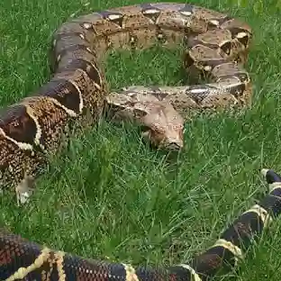

BOA CONSTRICTORA
(Boa constrictor)

Descripción de su hábitat y estilo de vida
La boa constrictora habita en selvas, bosques tropicales, sabanas y zonas cercanas a ríos de América. Prefiere lugares con mucha vegetación donde pueda esconderse y cazar. Es un animal principalmente nocturno, pasa gran parte del tiempo escondida y sale a cazar pequeños mamíferos, aves o reptiles. Mata a sus presas enrollándose alrededor de ellas y apretándolas hasta inmovilizarlas.
CARACTERISTICAS
Puede medir entre 2 y 4 metros de largo.
No tiene veneno; mata a sus presas por constricción (apretándolas con su cuerpo).
Su piel tiene patrones marrones y rojizos que la ayudan a camuflarse.
Es una serpiente ovovivípara, es decir, las crías nacen vivas.
Tiene dientes curvados hacia atrás para sujetar mejor a sus presas.